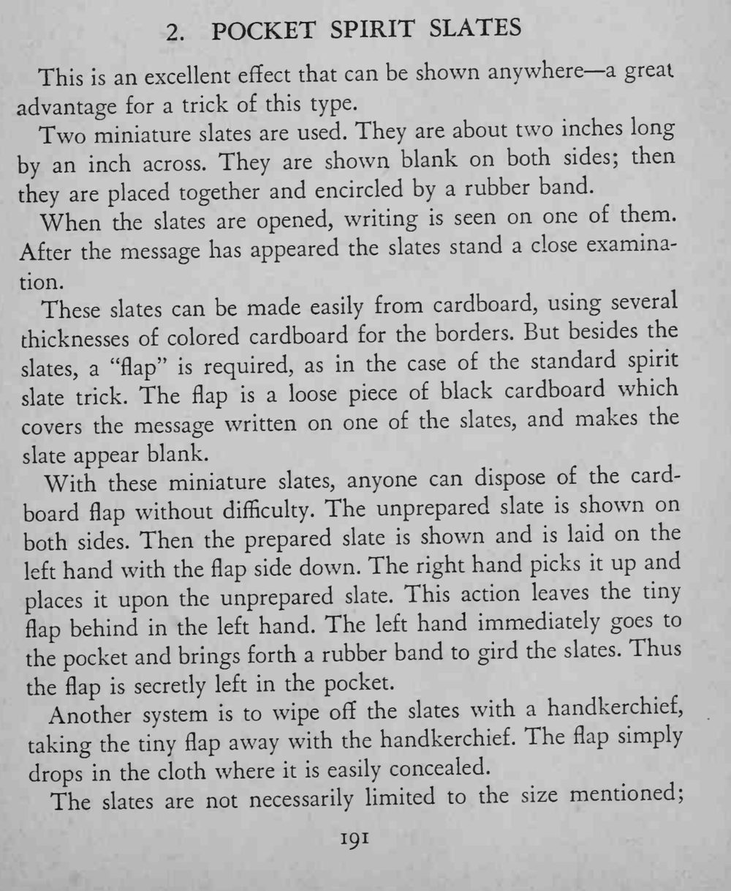
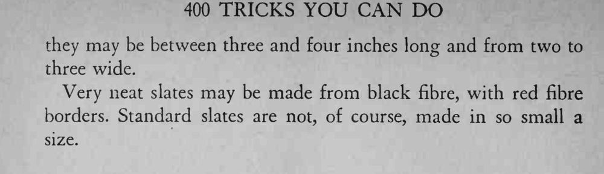

两块巴掌大的小石板两面都空白，被橡皮筋一捆；解开后其中一块上却出现了字迹，而且石板可以随便检查。
flap 要剪得和石板一样大，夹在手里时不能露出边。


This an excellent effect that can be shown anywhere— a great advantage for a trick of this type. Two miniature slates are used. They are about two inches long by an inch across. They are shown blank on both sides; then they are placed together and encircled by a rubber band. When the slates are opened, writing is seen on one of them. After the message has appeared the slates stand a close examination. These slates can be made easily from cardboard, using several thicknesses of colored cardboard for the borders. But besides the slates, a "flap" is required, as in the case of the standard spirit slate trick. The flap is a loose piece of black cardboard which covers the message written on one of the slates, and makes the slate appear blank. With these miniature slates, anyone can dispose of the cardboard flap without difficulty. The unprepared slate is shown on both sides. Then the prepared slate is shown and is laid on the hand with the flap side down. The right hand picks it up and left places upon the unprepared slate. This action leaves the tiny flap behind in the left hand. The left hand immediately goes to the pocket and brings forth a rubber band to gird the slates. Thus the flap is secretly left in the pocket. Another system is to wipe off the slates with a handkerchief, taking the tiny flap away with the handkerchief. The flap simply drops in the cloth where it is easily concealed. The slates are not necessarily limited to the size mentioned; they may be between three and four inches long and from two to three wide. Very neat slates may be made from black fibre, with red fibre borders. Standard slates are not, of course, made in so small a size.